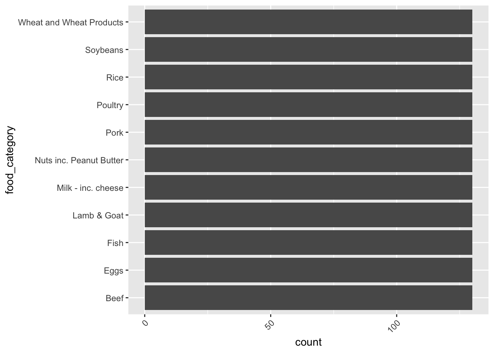
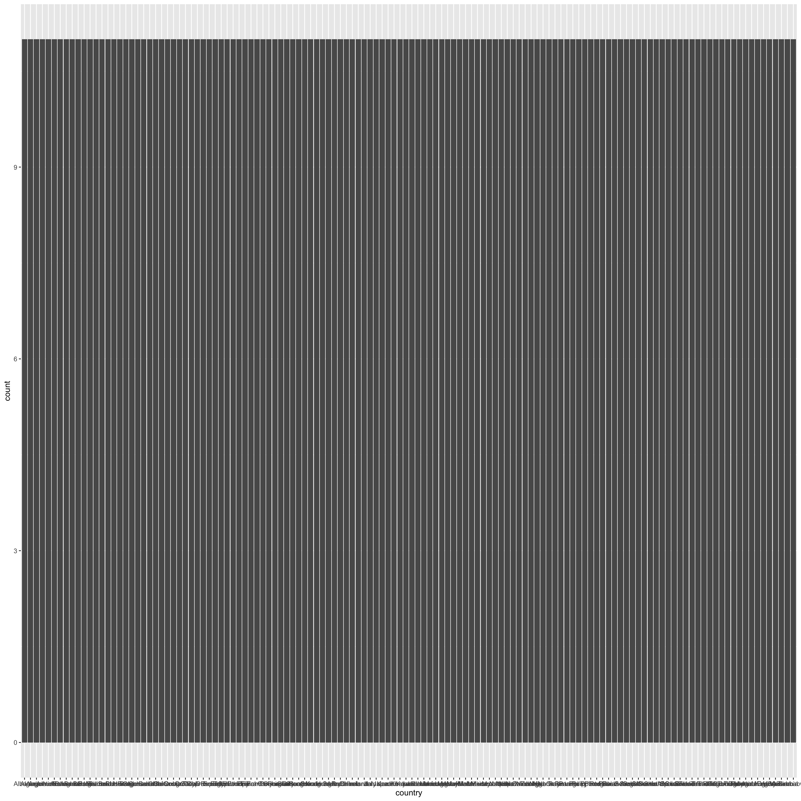
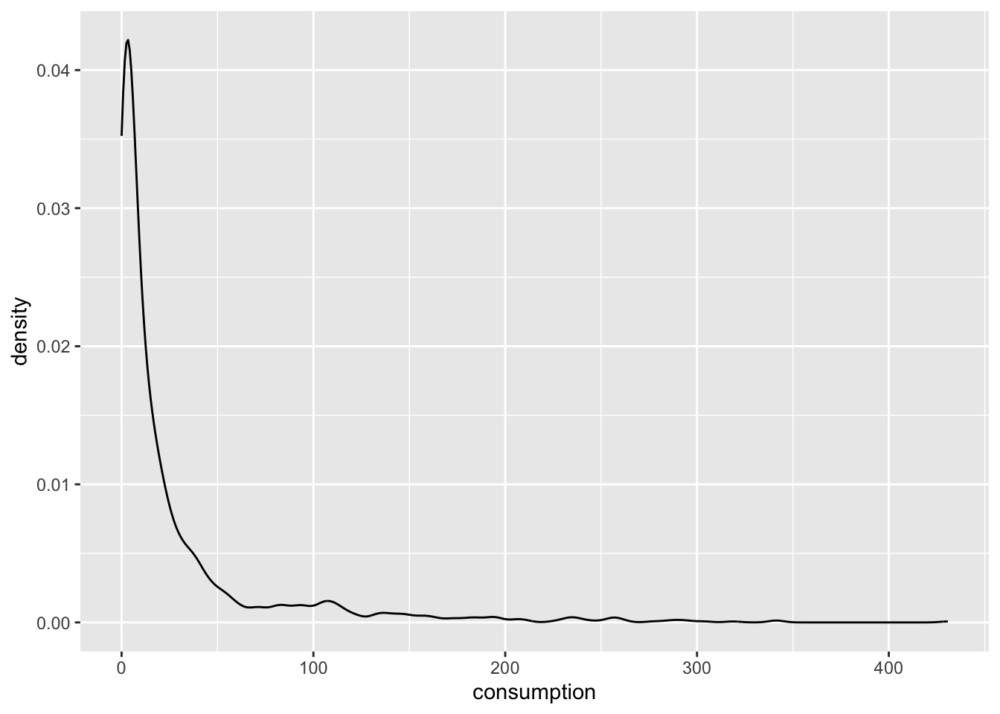
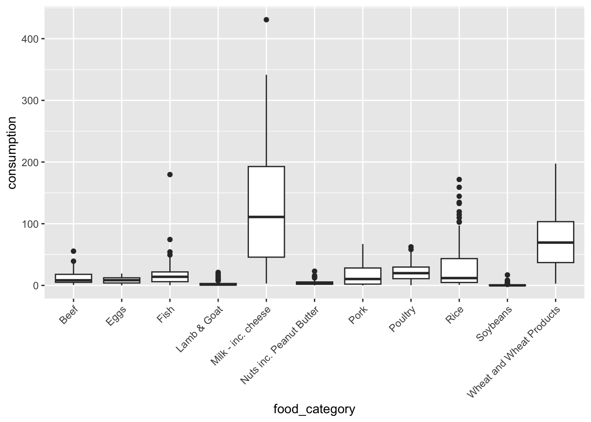
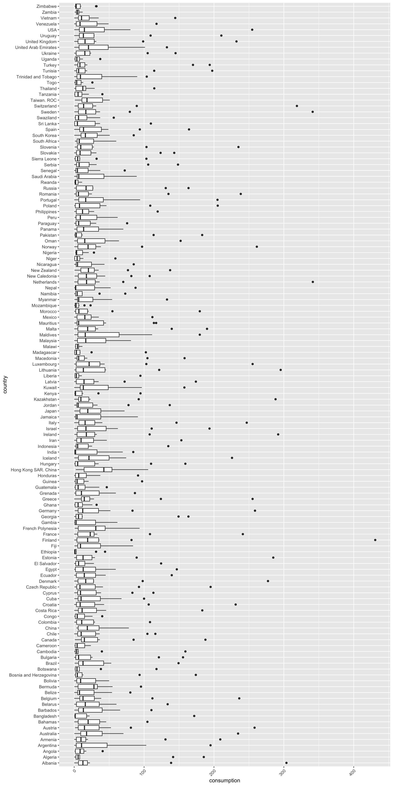
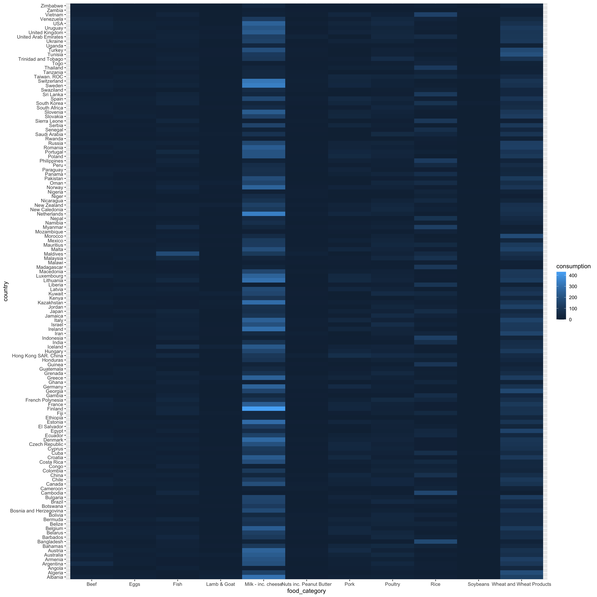
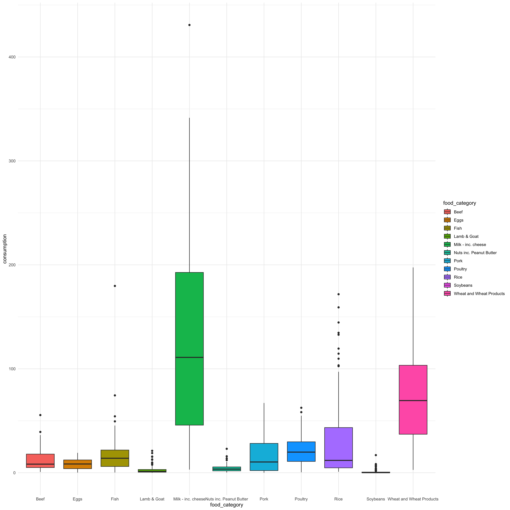
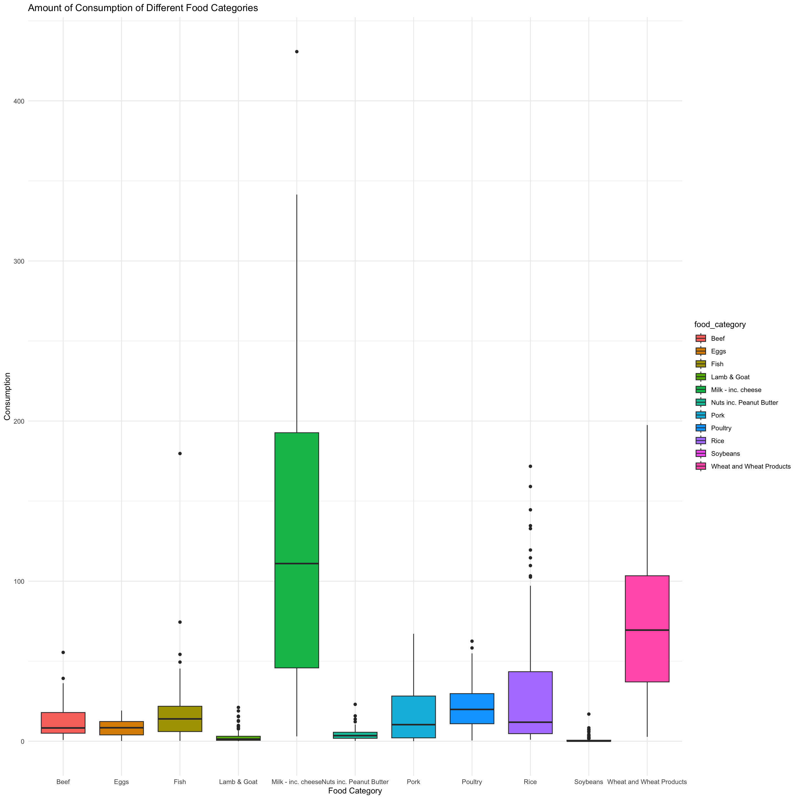

── Attaching core tidyverse packages ──────────────────────── tidyverse 2.0.0 ──
✔ dplyr 1.1.4 ✔ readr 2.1.5
✔ forcats 1.0.0 ✔ stringr 1.5.1
✔ ggplot2 3.5.1 ✔ tibble 3.2.1
✔ lubridate 1.9.4 ✔ tidyr 1.3.1
✔ purrr 1.0.2
── Conflicts ────────────────────────────────────────── tidyverse_conflicts() ──
✖ dplyr::filter() masks stats::filter()
✖ dplyr::lag() masks stats::lag()
ℹ Use the conflicted package (<http://conflicted.r-lib.org/>) to force all conflicts to become errors7 Exam 1
Research question: What does the consumption of each food category in each country look like?
Part 3:
Part 4:
---- Compiling #TidyTuesday Information for 2020-02-18 ----
--- There is 1 file available ---
── Downloading files ───────────────────────────────────────────────────────────
1 of 1: "food_consumption.csv"Part 5:
$food_consumption
# A tibble: 1,430 × 4
country food_category consumption co2_emmission
<chr> <chr> <dbl> <dbl>
1 Argentina Pork 10.5 37.2
2 Argentina Poultry 38.7 41.5
3 Argentina Beef 55.5 1712
4 Argentina Lamb & Goat 1.56 54.6
5 Argentina Fish 4.36 6.96
6 Argentina Eggs 11.4 10.5
7 Argentina Milk - inc. cheese 195. 278.
8 Argentina Wheat and Wheat Products 103. 19.7
9 Argentina Rice 8.77 11.2
10 Argentina Soybeans 0 0
# ℹ 1,420 more rowsNULL$food_consumption
# A tibble: 1,430 × 4
country food_category consumption co2_emmission
<chr> <chr> <dbl> <dbl>
1 Argentina Pork 10.5 37.2
2 Argentina Poultry 38.7 41.5
3 Argentina Beef 55.5 1712
4 Argentina Lamb & Goat 1.56 54.6
5 Argentina Fish 4.36 6.96
6 Argentina Eggs 11.4 10.5
7 Argentina Milk - inc. cheese 195. 278.
8 Argentina Wheat and Wheat Products 103. 19.7
9 Argentina Rice 8.77 11.2
10 Argentina Soybeans 0 0
# ℹ 1,420 more rowsList of 1
$ food_consumption: spc_tbl_ [1,430 × 4] (S3: spec_tbl_df/tbl_df/tbl/data.frame)
..$ country : chr [1:1430] "Argentina" "Argentina" "Argentina" "Argentina" ...
..$ food_category: chr [1:1430] "Pork" "Poultry" "Beef" "Lamb & Goat" ...
..$ consumption : num [1:1430] 10.51 38.66 55.48 1.56 4.36 ...
..$ co2_emmission: num [1:1430] 37.2 41.53 1712 54.63 6.96 ...
..- attr(*, "spec")=
.. .. cols(
.. .. country = col_character(),
.. .. food_category = col_character(),
.. .. consumption = col_double(),
.. .. co2_emmission = col_double()
.. .. )
..- attr(*, "problems")=<externalptr>
- attr(*, ".tt")= 'tt' chr "food_consumption.csv"
..- attr(*, ".files")='data.frame': 1 obs. of 3 variables:
.. ..$ data_files: chr "food_consumption.csv"
.. ..$ data_type : chr "csv"
.. ..$ delim : chr ","
..- attr(*, ".readme")=List of 2
.. ..$ node:<externalptr>
.. ..$ doc :<externalptr>
.. ..- attr(*, "class")= chr [1:2] "xml_document" "xml_node"
..- attr(*, ".date")= Date[1:1], format: "2020-02-18"
- attr(*, "class")= chr "tt_data"[1] "tt_data"# A tibble: 6 × 4
country food_category consumption co2_emmission
<chr> <chr> <dbl> <dbl>
1 Argentina Pork 10.5 37.2
2 Argentina Poultry 38.7 41.5
3 Argentina Beef 55.5 1712
4 Argentina Lamb & Goat 1.56 54.6
5 Argentina Fish 4.36 6.96
6 Argentina Eggs 11.4 10.5 [1] 1430 4# A tibble: 6 × 4
country food_category consumption co2_emmission
<chr> <chr> <dbl> <dbl>
1 Bangladesh Eggs 2.08 1.91
2 Bangladesh Milk - inc. cheese 21.9 31.2
3 Bangladesh Wheat and Wheat Products 17.5 3.33
4 Bangladesh Rice 172. 220.
5 Bangladesh Soybeans 0.61 0.27
6 Bangladesh Nuts inc. Peanut Butter 0.72 1.27spc_tbl_ [1,430 × 4] (S3: spec_tbl_df/tbl_df/tbl/data.frame)
$ country : chr [1:1430] "Argentina" "Argentina" "Argentina" "Argentina" ...
$ food_category: chr [1:1430] "Pork" "Poultry" "Beef" "Lamb & Goat" ...
$ consumption : num [1:1430] 10.51 38.66 55.48 1.56 4.36 ...
$ co2_emmission: num [1:1430] 37.2 41.53 1712 54.63 6.96 ...
- attr(*, "spec")=
.. cols(
.. country = col_character(),
.. food_category = col_character(),
.. consumption = col_double(),
.. co2_emmission = col_double()
.. )
- attr(*, "problems")=<externalptr> [1] "spec_tbl_df" "tbl_df" "tbl" "data.frame" Part 6: - The units of observation are country, food_category, consumption, and co2_emission - There are 11 food categories - there are 130 countries
Part 7: - There are 3 variables involved in the research question - The variables are, food_category (categorical), country (categorical), and consumption
ggplot(fc, aes(y = food_category)) +
geom_bar() +
theme(axis.text.x = element_text(angle = 45, hjust = 1))


Part 8: Overall Food Consumption / Food Category
ggplot(fc, aes(x = food_category, y = consumption)) +
geom_boxplot() +
theme(axis.text.x = element_text(angle = 45, hjust = 1))
Overall Food Consumption / Country
ggplot(fc, aes(y = country, x = consumption)) +
geom_boxplot() +
theme(axis.text.x = element_text(angle = 45, hjust = 1))
# This graph is not good because there is a very large number of countries. This makes it almost impossible to interpret the graph. However, a boxplot is the optimal graph in this situation because the goal is to visualize a numerical variable and categorical variable in a bivariate visualization. If there was more space for the graph to occupy it would be more effective.Part 9:

The other visualizations I would try this research question are a map or a facet wraped bar graph. A choropleth map would be best because each country could be shaded a different color based on the amount of consumption.
Part 10: At least five effective viz concepts for this research question: 1. captions 2. color blind friendly 3. alternative text 4. aesthetically pleasing theme/style 5. labeled axes 6. title 7. source
ggplot(fc, aes(fill = food_category, y = consumption, x = food_category)) +
geom_boxplot() +
theme(axis.text.x = element_text(angle = 45, hjust = 1)) +
theme_minimal()
ggplot(fc, aes(x = food_category, y = consumption, fill = food_category)) +
geom_boxplot() +
theme(axis.text.x = element_text(angle = 45, hjust = 1)) +
theme_grey() +
labs(x = "Food Category",
y = "Consumption",
title = "Amount of Consumption of Different Food Categories",
Caption = "Visualization By: Nolan Rittenberg,
Data From: tidytuesdayR") +
theme(
axis.text.x = element_text(angle = 45, hjust = 1, size = 14),
axis.text.y = element_text(size = 14),
axis.title.x = element_text(size = 16, face = "bold"),
axis.title.y = element_text(size = 16, face = "bold"),
plot.title = element_text(size = 20, face = "bold", hjust = 0.5, margin = margin(b = 15)),
plot.caption = element_text(size = 12, hjust = 0, margin = margin(t = 10))
)